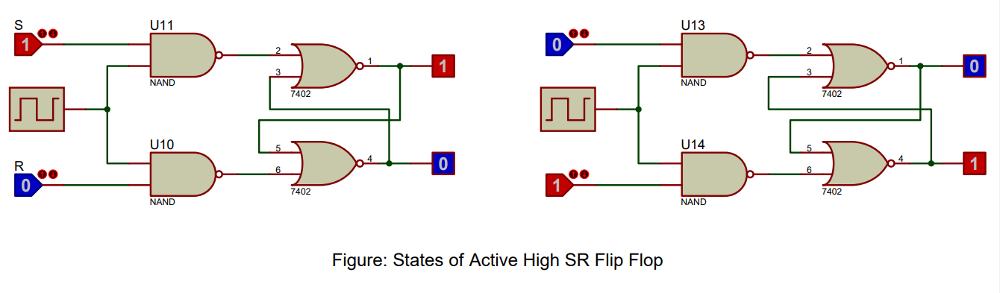

SR Flip Flops and its types: Active High and Active Low SR Flip Flops
In the domain of digital electronics, a variety of devices orchestrate a symphony of binary operations. Among these, the SR Flip Flop plays an essential role. An SR Flip Flop (Set-Reset Flip Flop) is a type of latch that maintains its output state until a specific input condition is met. The 'set' and 'reset' inputs control this state, making SR Flip Flops an integral component of memory storage units and sequential logic circuits.
Within the realm of SR Flip Flops, two specific types rise to prominence: the Active High SR Flip Flop and the Active Low SR Flip Flop.
- The Active High SR Flip Flop functions such that the outputs (Q and Q') respond when the input signals 'set' (S) and 'reset' (R) are at a high logic level (logic 1). Its Boolean expressions are as follows:
$Q = S + R'Q'$$Q' = R + SQ$
The aforementioned expressions represent OR and AND operations. In this case, if both 'set' and 'reset' inputs are low (logic 0), the outputs maintain their previous state, performing their primary role of state retention.
- The Active Low SR Flip Flop differs from its counterpart in its response to logic levels. In this case, the flip flop responds when 'set' (S) and 'reset' (R) inputs are at a low logic level (logic 0). The Boolean expressions are similar to those of the Active High SR Flip Flop but involve an inversion at the inputs:
$Q = S' + RQ'$$Q' = R' + SQ$
The logic operation involves the combination of AND and OR operations, similar to the Active High SR Flip Flop. The role of the Active Low SR Flip Flop is also to maintain its previous state when both inputs are high (logic 1).
Despite their seemingly simple roles, the manipulation of SR Flip Flops' output states forms the basis for various more complex memory storage units and sequential circuits.
As digital technology continues to expand and become more complex, the need for devices like SR Flip Flops, that can retain state and manipulate data, grows. SR Flip Flops can be found in complex systems such as digital registers, counters, and in more advanced components of microprocessors and digital signal processors.
Moreover, understanding the functions of Active High and Active Low SR Flip Flops, their Boolean expressions, and applications can provide profound insights into the world of digital electronics and computer architecture.
Diving Deep into the World of SR Flip Flops
Both Active High and Active Low SR Flip Flops consist of basic building blocks known as logic gates. These gates, like NOR and NAND gates, work in tandem to govern the binary operations of these Flip Flops. An understanding of their functioning is paramount to harnessing their potential and propelling the advancement of digital systems.
Now that we have explored the fundamentals of SR Flip Flops, it is time to apply this knowledge. In the subsequent sections, we will delve into practical activities like the verification of truth tables for Active High and Active Low SR Flip Flops using Proteus software. This powerful tool aids in the simulation of electronic circuits and helps bring our theoretical understanding to life. With a hands-on approach, a deeper understanding of SR Flip Flops can be achieved, highlighting their importance in the realm of digital systems, appealing to a wide range of learners, from novices to seasoned professionals.
Procedures of Doing the Experiment
Active High SR Flip Flop
Title
Implementation of Active High SR Flip Flop Using AND and NOR Gates in Proteus Software
Aim
To implement and validate the operation of an Active High SR Flip Flop using Proteus software simulation with 7408 AND gate IC and 7402 NOR gate IC.
Requirements
Proteus software, 7408 AND gate IC, 7402 NOR gate IC, clock signal generator, Logic State, and Logic Probe tools.
Theory
An Active High SR (Set-Reset) Flip Flop is a basic memory device that can store a single bit of data. It is called "active high" because it reacts to high logic levels. The Flip Flop has two inputs, S (Set) and R (Reset), and two outputs, Q and Q'. When the Set input is high, the Q output becomes high, and when the Reset input is high, the Q' output becomes high. This circuit can be implemented using a combination of AND gates (7408) and NOR gates (7402).
Truth Table of Active High SR Flip Flop
| S | R | Q (Next State) | Q' (Next State) |
|---|---|---|---|
| 0 | 0 | Q (Previous State) | Q' (Previous State) |
| 0 | 1 | 0 | 1 |
| 1 | 0 | 1 | 0 |
| 1 | 1 | Not Allowed (Indeterminate) | Not Allowed (Indeterminate) |
Procedure
- Open Proteus, create a new schematic capture.
- Add the 7408 AND gate IC, 7402 NOR gate IC, clock signal generator, Logic State, and Logic Probe (Big) from the pick device menu to the dashboard.
- Place the AND gates, NOR gates, clock signal generator, Logic State, and Logic Probe tools onto the schematic.
- Connect the components to form an Active High SR Flip Flop: The S and R inputs connect to one input of the AND gates. The clock signal connects to the second input of the AND gates. The output of each AND gate connects to one input of a NOR gate. The output of each NOR gate connects to the second input of the other NOR gate. The outputs of these NOR gates are Q and Q'.
- Run the simulation and observe the Q and Q' outputs for all possible input combinations of S, R, and Clock signal.
- Verify the simulation results against the expected truth table of an Active High SR Flip Flop.
Result
Image Note: Image has a error. NAND Gate instead of AND Gate is used here as simulation fails when AND is used.
The simulation results match the Active High SR Flip Flop operation, validating its correct functionality.
Conclusion
The Active High SR Flip Flop has been successfully implemented and its operation verified using Proteus software, confirming its proper operation as a memory device in digital circuits.
Active-Low SR Flip Flop
Title
Implementation of Active-Low SR Flip Flop Using NAND Gates with Clock Signal in Proteus Software
Aim
To implement and validate the operation of an active-low SR Flip Flop with a clock signal using Proteus software simulation with NAND (7400) gate IC.
Requirements
Proteus software, 7400 NAND gate IC, clock signal generator, Logic State, and Logic Probe tools.
Theory
An active-low SR (Set-Reset) Flip Flop is a basic memory device to store a single bit of data, where the inputs are active when low. This version of SR Flip Flop uses a clock signal. It consists of two inputs, Set (S) and Reset (R), and two outputs, Q and Q' (Q bar). The Flip Flop operates in such a way that the Q output is the inverse of Q' output. Here, we will use the 7400 IC which contains NAND gates. The behavior of the active-low SR Flip Flop can be understood through its truth table.
Truth Table of Active-Low SR Flip Flop
| Clock | Set (S) | Reset (R) | Q (Next State) | Q' (Next State) |
|---|---|---|---|---|
| 0 | x | x | Q (Previous State) | Q' (Previous State) |
| 1 | 1 | 0 | 0 | 1 |
| 1 | 0 | 1 | 1 | 0 |
| 1 | 0 | 0 | Invalid | Invalid |
Procedure
- Open Proteus, create a new schematic capture.
- Add the 7400 NAND gate IC, Clock Signal generator, Logic State, and Logic Probe (Big) from the pick device menu to the dashboard.
- Place the NAND gates, Clock Signal generator, Logic State, and Logic Probe tools onto the schematic.
- Connect the components to form an active-low SR Flip Flop: S and R inputs go to the first input of separate NAND gates (7400), the second input of the NAND gates connect to the Clock Signal, the output of each NAND gate connects to one input of the other two NAND gates, the outputs of these NAND gates are Q and Q'.
- Run the simulation and observe the Q and Q' outputs for all possible input combinations of Set (S), Reset (R), and Clock signal.
- Verify the simulation results against the expected truth table of an active-low SR Flip Flop.
Result

The simulation results match the active-low SR Flip Flop operation, validating its correct functionality.
Conclusion
The Active-Low SR Flip Flop has been successfully implemented and its operation verified using Proteus software, confirming its proper operation as a basic memory device in digital circuits.
FAQs
Here are some frequently asked questions about SR Flip Flops and their verification in Proteus.
1. What is an SR Flip Flop?
An SR Flip Flop (Set-Reset Flip Flop) is a type of latch that maintains its output state until a specific input condition is met. It plays an essential role in memory storage units and sequential logic circuits.
2. What are Active High and Active Low SR Flip Flops?
Active High SR Flip Flop responds when the 'set' and 'reset' inputs are at a high logic level (logic 1). Active Low SR Flip Flop responds when 'set' and 'reset' inputs are at a low logic level (logic 0).
3. How can I simulate SR Flip Flops in Proteus?
To simulate SR Flip Flops in Proteus, you can use logic gates like AND, NOR, and NAND gates. For an Active High SR Flip Flop, use 7408 AND gate IC and 7402 NOR gate IC. For an Active-Low SR Flip Flop, use 7400 NAND gate IC. Follow the procedures mentioned in the content for implementation and validation.
4. What is the significance of the truth table in SR Flip Flops?
The truth table of SR Flip Flops helps in understanding the output states (Q and Q') based on the inputs 'set' (S) and 'reset' (R). It is crucial for verifying the operation and functionality of SR Flip Flops.
5. Why are SR Flip Flops important in digital electronics?
SR Flip Flops are integral components of memory storage units and sequential logic circuits. They are essential in building complex systems like digital registers, counters, microprocessors, and digital signal processors.
Challenge Yourself
Take your understanding of SR Flip Flops to the next level by trying these challenges.
1. Implement a D Flip Flop using SR Flip Flop
Using the basic SR Flip Flop, try to implement a D Flip Flop. This will help you understand how SR Flip Flops can be used as building blocks for more complex flip flops.
2. Build an SR Flip Flop using Transistors
Try building an SR Flip Flop circuit using transistors instead of logic gates. Compare its behavior with the SR Flip Flop built using logic gates.
3. Extend the SR Flip Flop to Create a Counter
Design a circuit using SR Flip Flops to create a binary counter. Simulate it using Proteus and observe how the output states change with each clock pulse.
4. Explore the Applications of SR Flip Flops
Research and understand the various applications of SR Flip Flops in real-world scenarios. Learn how they are used in memory storage units, counters, registers, and more.
5. Code anSR Flip Flop Simulator
Write a program in a programming language of your choice to simulate the behavior of an SR Flip Flop. Take 'set' and 'reset' inputs from the user and display the outputs (Q and Q').